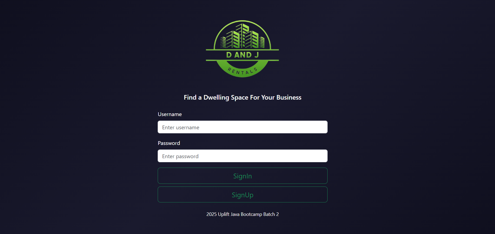
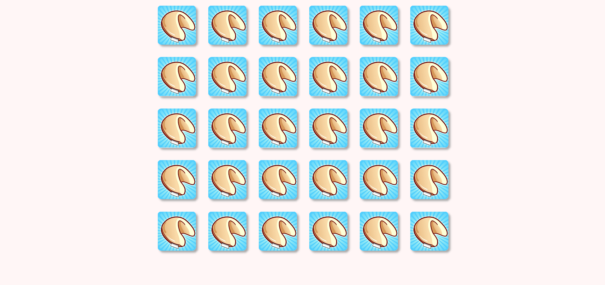
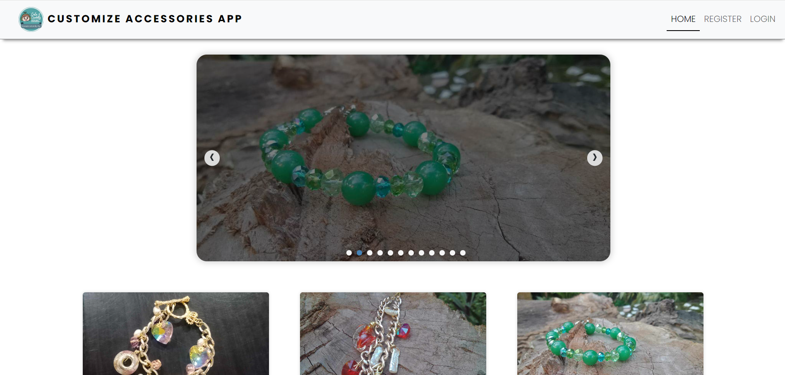
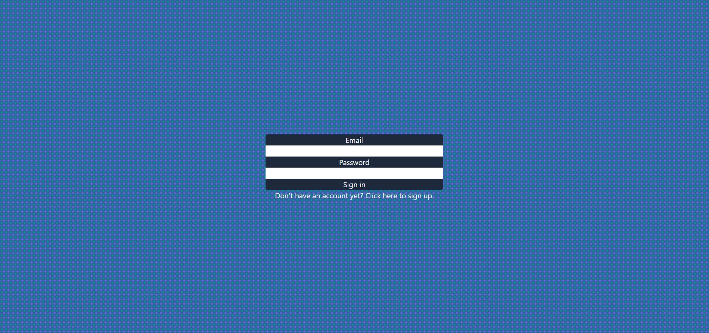
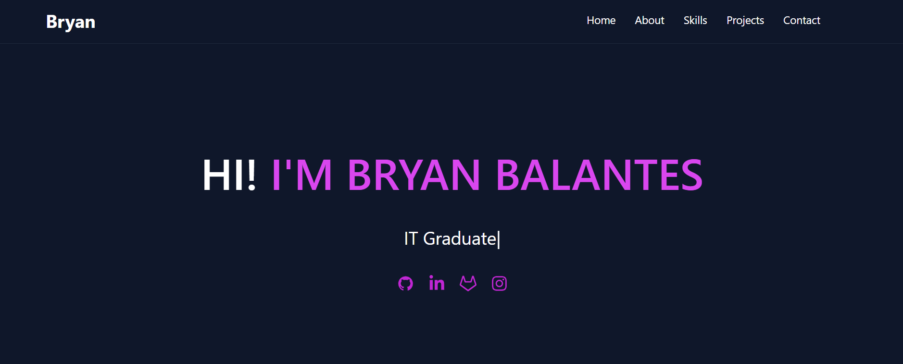

Latest Project
01
Property Management System
Developed a property management system as a training project to practice Java and Spring Boot, supporting basic management of tenants, leases, payments, and commercial units with simple user authentication.
Java, Spring Boot, Spring Security, Thymeleaf, PostgreSQL, Supabase, JPA/Hibernate, Bootstrap
02
Fortune Cookie
This is a simple homework from Village88, where we were tasked with cloning a design. We were given sample images and instructions that we needed to follow to complete the task.
HTML5, CSS3, JavaScript
03
Image Search App
This is the second project I developed during my time at Uplift Bootcamp, a simple image search app that allows users to find and browse images using keywords. It fetches images from an API and displays them in a clean, responsive gallery for a smooth user experience.
HTML5, CSS3, JavaScript, unsplash API
04
Customize Accessories App
These are my 3rd and 4th projects from Uplift Bootcamp, a simple Customize Accessories App built using React.js, Node.js, Express.js, and MongoDB. This project was given to us to showcase what we learned from our lessons in full stack development.
React.js, Node.js, Express.js, MongoDB, Tailwind CSS
05
Blog App
This is one of my code-along projects from Uplift Bootcamp, a simple Blog App built using React.js, Tailwind CSS, CSS3, MongoDB, Node.js, JWT, and Socket. Users must register before they can post their own blogs. After registration, users can post their blogs, reply to comments on their posts, and comment on others' blogs. This project was created to showcase what we learned in our lessons on React.js, Tailwind CSS, CSS3, MongoDB, Node.js, JWT, and Socket.
React.js, Tailwind CSS, CSS3, MongoDB, Node.js, JWT, Socket
06
My Portfolio Website 2
This is my final project in Uplift Bootcamp. In this final portfolio, you can find all the projects I've completed, along with information about me.
React.js, Tailwind CSS, CSS3, AOS (Animate On Scroll)





